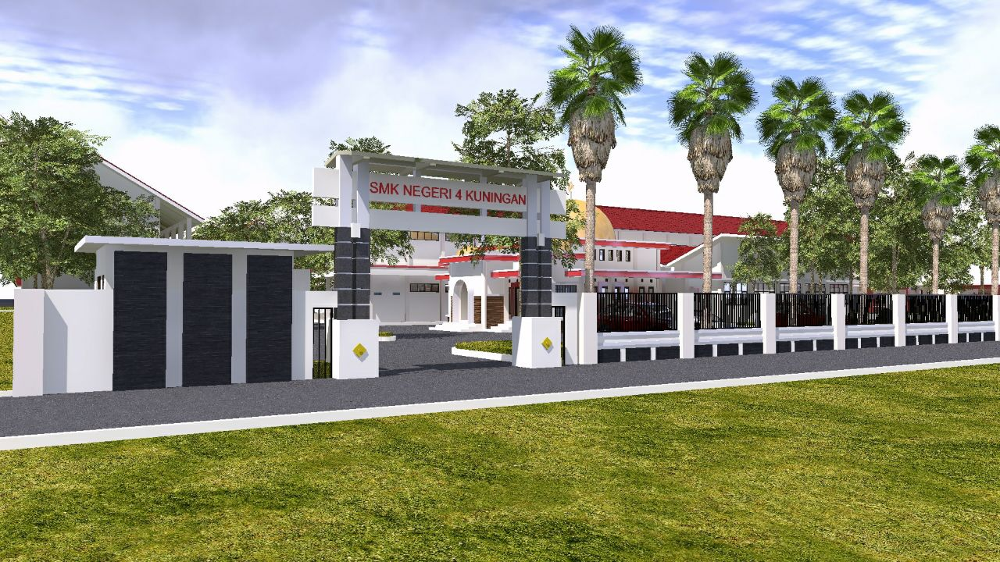
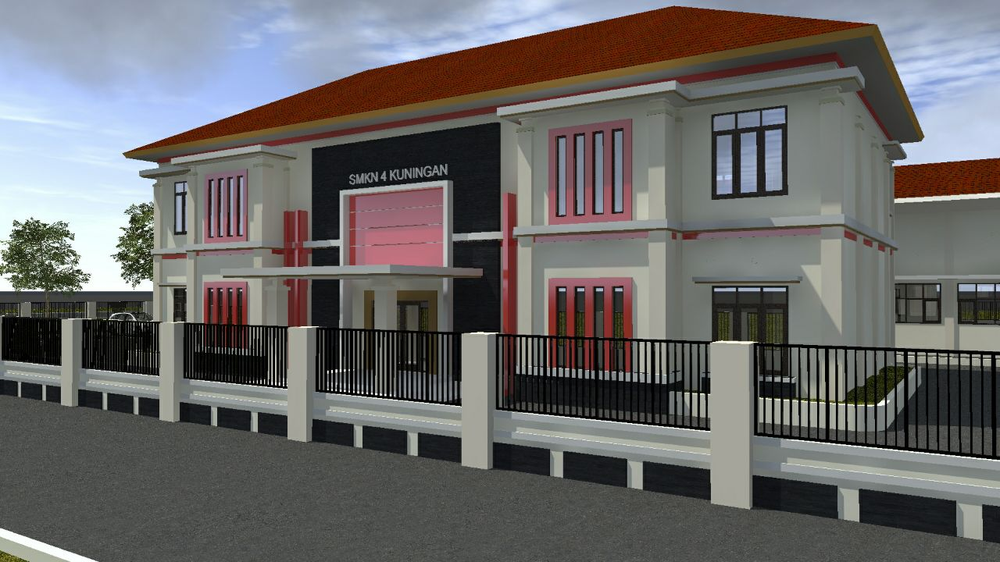

Sejarah

“Pesatnya perkembangan dunia saat ini harus di barengi dengan Sumber Daya Manusia yang mempuni dalam segala bidang. Berangkat dari sanalah SMK Negeri 4 Kuningan yang didirikan Tahun 2004 berusaha untuk selalu mencetak Generasi Bangsa yang Siap Pakai. Guru - guru yang kopenten dalam bidangnya, Fasilitas yang terus di perbaharui, menjadikan SMK Negeri 4 Kuningan siap membekali Siswa – siswinya dengan kemampuan Ekonomi, Industri Kreatif, Otomotif, Teknologi dan Mengedepankan pembentuan akhlaq mulia.”
Kebijakan Pemerintah Kabupaten Kuningan mendirikan Sekolah Menengah Kejuruan di Wilayah Timur Kuningan sebagai alternatif tujuan masyarakat Cidahu dan sekitarnya untuk mendapatkan pendidikan kejuruan, Fasilitas belajar yang memadai, guru-guru yang kompeten dibidangnya akan membantu lulusan untuk mendapatkan pekerjaan dan mengedepankan pembentukan akhlak mulia serta mampu masuk ke Universitas Negeri maupun Swasta.
Lokasi SMKN 4 Kuningan terletak di Desa Cikeusik Kecamatan Cidahu Kabupaten Kuningan, dimana tempat tersebut mudah dijangkau oleh angkutan umum jurusan Ciawigebang – Ciledug. Berlokasi yang terletak di daerah perbatasan Kuningan – Cirebon di bagian Timur ini menyebabkan siswa/siswi yang bersekolah di SMKN 4 Kuningan tak hanya yang berdomisili di Kabupaten Kuningan saja, tetapi yang berdomisili di Kabupaten Cirebon juga. Hal tersebut memicu terjadinya pencampuran kedua budaya yang menyebabkan akulturasi budaya dan menambah wawasan ketata bahasaan siswa dalam memahami Bahasa Cirebon dan Bahasa Sunda.
Visi Dan Misi

Visi
Terwujudnya SDM yang beriman dan bertaqwa kepada tuhan yang maha esa dalam meraih prestasi guna memasuki dunia kerja yang produktif serta dapat hidup mandiri.
Misi
- Mengupayakan peningkatan keimanan ketaqwaan, kepadatuhan yang maha esa akhlak serta membangun karakter dan budaya bangsa
- Mengembangkan kurikulum nasional sesuia kebutukan masyarakat, tuntunan pasar kerja serta perkembangan ilmu mengetahui dan teknologi.
- Melaksanakan sistem pendidikan pembeljaran dan pelatihan menengah kejuruan yang berwawasan keunggulan serta berorientasi keberhasilan dimana depan.
- Mengembangkan sumber daya pendidikan secara optimal dan berkelanjutan agar mampu berkompetisi di era globalisasi
- Menjalin kemitraan dan kerjasamaa dunia dengan dunia industri, institusi, dan masyarakat dalam upaya meningkatkan kualitas pendidikan.
Tujuan
- Mengembangkan budaya sekolah yang religius pendidikan karakter dan budaya bangsa.
- Melaksankan pendekatan pembelajaran saintifik yang aktif, inofatif,efektif dan menyenangkan pada semua mata diklat.
- Meningkatkan ilmu pengetahuan, tenologi serta keterampilan yang kompeten untuk memasuki dunia kerja, mampu hidup mandiri dan atau melanjutkan ke perguruan tinggi.
- Meningkatkan kesadaran warga sekolah terhadap pemeliharaan kelestarian lingkungan hidup, kebersihan, keindahan, ketertiban, kesehatan, kekeluargaan, kedisiplinan dan keamanan (7K).
- Meningkatkan mekanisme kerja yang proporsional, profesional dan akuntabel dalam memperkuat manajemen sekolah yang baik.
- Mengembangkan kemitraan dan kerjasama yang saling menguntungkan dengan institusi pasangan dan masyarakat.
Fasilitas
Untuk mendukung semua kegiatan, sekolah mempunyai fasilitas sebagai berikut :
- Ruang Belajar refresentatif
- Laboratorium komputer Di lengkapi AC
- Laboratorium Multimedia
- Ruang Administrasi Perkantoran di Lengkapi AC
- Laboratorium akuntansi
- Bengkel Teknik Otomotif
- Bengkel teknik instalasi tenaga Listrik
- Masjid Sekolah
- Ruang Kesenian Tradisional, Modern Dan Islami
- Lapangan upacara Dan Olahraga
- Perpustakaan
- Hotspot Area
- Ruang Bursa Kerja Khusus (BKK)
- koperasi Sekolah
- Gedung unit produksi
- Bengkel pengembangan Diri
- Sekretariat tiap-Tiap ekstrakurikuler
- Taman sekolah
- Kantin sekolah
- Lapangan parkir luas
- Toilet guru dan siswa
- Akses lalu Lintas Mudah